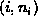

Data Structures and Algorithms
with Object-Oriented Design Patterns in Java
Data Structures and Algorithms
with Object-Oriented Design Patterns in Java


-
Complete the SetAsArray class
introduced in Program
 by providing suitable definitions for the following methods:
purge, isEmpty, isFull, getCount,
accept, and getEnumeration.
Write a test program and test your implementation.
by providing suitable definitions for the following methods:
purge, isEmpty, isFull, getCount,
accept, and getEnumeration.
Write a test program and test your implementation. -
Complete the SetAsBitVector class
introduced in Program
by providing suitable definitions for the following methods:
purge, isEmpty, isFull, getCount,
accept, and getEnumeration.
Write a test program and test your implementation.
-
Rewrite the insert, withdraw, and isMember
methods of the SetAsBitVector implementation
so that they use bitwise shift and mask operations
rather than division and modulo operations.
Compare the running times of the modified methods
with the original ones and explain your observations.
-
Complete the MultisetAsArray class
introduced in Program
by providing suitable definitions for the following methods:
purge, getCount, accept, and getEnumeration.
Write a test program and test your implementation.
-
Complete the MultisetAsLinkedList class
introduced in Program
by providing suitable definitions for the following methods:
purge, isEmpty, isFull, getCount,
compareTo, accept, and getEnumeration.
Write a test program and test your implementation.
-
Design and implement a multiset class
in which the contents of the set are represented by
a linked list of ordered pairs of the form ,
where i an the element of the universal set U
and
 is a non-negative integer that counts the number
of instances of the element i in the multiset.
(See Exercises and ).
is a non-negative integer that counts the number
of instances of the element i in the multiset.
(See Exercises and ). -
Write a program to compute the number of ways
in which a set of n elements can be partitioned.
That is, compute
where
Hint: See Section .
 Copyright © 1998 by Bruno R. Preiss, P.Eng. All rights reserved.
Copyright © 1998 by Bruno R. Preiss, P.Eng. All rights reserved.